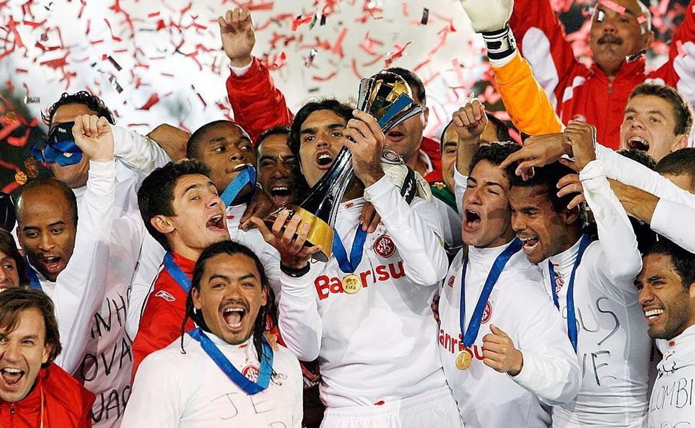

O dia em que o Internacional derrubou o gigante, a histórica final de 2006 🏆
No dia 17 de dezembro de 2006, o Internacional conquistou o maior título de sua história ao vencer o Barcelona por 1 a 0 na final do Mundial de Clubes da FIFA, disputada em Yokohama, no Japão. O time gaúcho, comandado por Abel Braga, enfrentou uma equipe considerada a melhor do mundo na época, que contava com craques como Ronaldinho Gaúcho, Xavi e Andrés Iniesta. Mesmo sendo apontado como azarão, o Inter fez uma partida extremamente organizada, neutralizando as principais jogadas do adversário e resistindo à pressão durante boa parte do jogo.

Aos 37 minutos do segundo tempo, após uma bela jogada de Iarley, o atacante Adriano Gabiru, que havia entrado poucos minutos antes, marcou o gol que garantiu a vitória colorada e entrou para a história do clube. A conquista surpreendeu o mundo do futebol e transformou aquele elenco em uma geração inesquecível para a torcida, consolidando o Internacional como campeão mundial e protagonista de uma das maiores vitórias já alcançadas por um clube brasileiro.